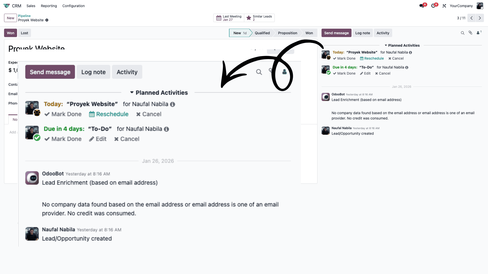

Chatter adalah area komunikasi yang biasanya terletak di sebelah kanan (pada layar desktop besar) atau di bagian bawah (pada layar kecil) dari setiap form dokumen Odoo (seperti Sales Order, Invoice, atau Contact).
Chatter berfungsi sebagai:
- Riwayat Audit: Mencatat setiap perubahan data (misal: siapa yang mengubah status dari Draft menjadi Confirmed).
- Alat Komunikasi: Mengirim email ke eksternal atau catatan internal ke tim.
- Penjadwalan: Mengatur aktivitas (Meeting, To-Do, Call) terkait dokumen tersebut.

📸 Screenshot: Area Chatter dengan history log